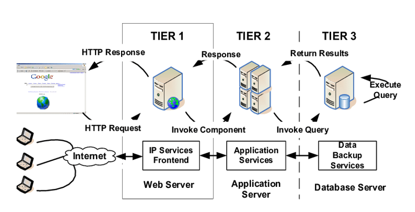

What is a 3 tier Application?
A 3-tier application will compose of 3 layers: a Presentation tier, an Application tier, and a Data tier.
Benefits of a 3 tier Application?
The benefits of using a 3-tier architecture include improved horizontal scalability, performance, and availability. With three tiers, each part can be developed concurrently by a different team of programmers coding in different languages from the other tier developers. Because the programming for a tier can be changed or relocated without affecting the other tiers, the 3-tier model makes it easier for an enterprise or software packager to continually evolve an application as new needs and opportunities arise. Existing applications or critical parts can be permanently or temporarily retained and encapsulated within the new tier of which it becomes a component.
The 3 different layers explained
An example 3 tier application will compose of 3 layers: a Presentation tier, an application tier, and a Data tier.
The Presentation tier is a graphical user interface (GUI) that communicates with the other two tiers…in this layer, the users can directly access the web page, or an operating system's GUI. The is written in languages like built with HTML5, cascading style sheets (CSS) and JavaScript, and the presentation tier communicates with the other tiers through application program interface (API) calls.
Application tier also known as the business logic tier… controls how the application functions. The application layer is written in a programming language such as Java and contains the business logic that supports the application's core functions. The underlying application tier can either be hosted on distributed servers in the cloud or on a dedicated in-house server, depending on how much processing power the application requires.
Data tier contains the database servers, file shares, and anything that will be saved in the database... it can be hosted on-prem or in the cloud. Popular database systems for managing read/write access include MySQL, PostgreSQL, Microsoft

Sample AWS 3-Tier Application

The Presentation tier 1. A Public Route Table — associated with 2 Public Subnets (1/AZ) 2. At least 2 EC2 instances with a boot strapped Static Web Page — managed by an Auto Scaling Group 3. EC2 Web Server Security Group
The Application tier 1. A Private Route Table — associated with 2 Private Subnets (1/AZ) 2. At least 2 EC2 instances managed by an Auto Scaling Group 3. EC2 Application Server Security Group
The Data tier 1. A Private Route Table — associated with 2 Private Subnets (1/AZ) 2. A Database Security Group 3. A free Tier MySQL RDS Database
Kubernetes API
Users access the Kubernetes API using kubectl, client libraries, or by making REST requests. Both human users and Kubernetes service accounts can be authorized for API access. When a request reaches the API, it goes through several stages, illustrated in the following diagram:
Steps:
A request is sent through an API serves on port 443, protected by TLS. The API server presents a certificate. This certificate may be signed using a private ertificate authority (CA), or based on a public key infrastructure linked to a generally recognized CA.
STEP 1: Authentication:
Once TLS is established, the HTTP request moves to the Authentication step. Authentication modules include client certificates, password, and plain tokens, bootstrap tokens, and JSON Web Tokens (used for service accounts). Multiple authentication modules can be specified, in which case each one is tried in sequence, until one of them succeeds. If the request cannot be authenticated, it is rejected with HTTP status code 401. Otherwise, the user is authenticated as a specific username, and the username is available to subsequent steps to use in their decisions. Some authenticators also provide the group memberships of the user, while other authenticators do not. For more information about the different ways to Authenticate, check this url: See link
STEP 2: Authorization So, after the request has been authenticated to be coming from a specific user, the request must next be authorized. A request MUST include: - the username of the requester - the requested action, and - the object affected by the action.
Kubernetes supports multiple authorization modules, such as ABAC mode, RBAC Mode, and Webhook mode. When an administrator creates a cluster, they configure the authorization modules that should be used in the API server. If more than one authorization modules are configured, Kubernetes checks each module, and if any module authorizes the request, then the request can proceed. If all of the modules deny the request, then the request is denied (HTTP status code 403). See the below sample request: For more information about Authorization: check this url
STEP 3: Admission control Admission Control modules are software modules that can modify or reject requests. They act on requests that create, modify, delete, or connect to (proxy) an object. Note: if any admission controller module rejects, then the request is immediately rejected. When multiple admission controllers are configured, they are called in order.
STEP 4: Validation Once a request passes all admission controllers, it is validated using the validation routines for the corresponding API object, and then written to the object store. For more information about Admission control, check this url: For more information: check this url
OpenSSL
Setup steps:
# Generate a ca.key with 2048bit
$ openssl genrsa -out ca.key 2048
# According to the ca.key generate a ca.crt (use -days to set the certificate effective time):
$ openssl req -x509 -new -nodes -key ca.key -subj "/CN=${MASTER_IP}" -days 10000 -out ca.crt
# Generate a server.key with 2048bit:
$ openssl genrsa -out server.key 2048
# Generate the certificate signing request based on the config file:
$ openssl req -new -key server.key -out server.csr -config csr.conf
# Generate the server certificate using the ca.key, ca.crt and server.csr:
$ openssl x509 -req -in server.csr -CA ca.crt -CAkey ca.key \
-CAcreateserial -out server.crt -days 10000 \
-extensions v3_ext -extfile csr.conf
# View the certificate signing request:
$ openssl req -noout -text -in ./server.csr
# View the certificate:
$ openssl x509 -noout -text -in ./server.crt
Cloud Native Security
The 4C’s of cloud Native Security

-
Cloud: Each cloud provider makes security recommendations for running workloads securely in their environment. If you are running a Kubernetes cluster on your own hardware or a different cloud provider, consult your documentation for security best practices. For example, if you are running an EKS cluster you should understand Amazon Web Services
Checkout the security rules: Common security Rules -
Cluster: When dealing with cluster security, there are two areas of concern for securing Kubernetes: 1.1. Securing the cluster components that are configurable 1.2. Securing the Components in the cluster (Your applications) 1.1. Securing the cluster For more info: Click-link 1.2. Securing the applications When it comes to securing the applications running n the cluster, the key question here is: how to secure the entire chain of applications in the cluster? For example: If you are running a service (Service Y) that is critical in a chain of other resources and a separate workload (Service Z) which is vulnerable to a resource exhaustion attack, then the risk of compromising Service Y is high if you do not limit the resources of Service Z. The Recommended security Areas for your application workloads
To manage application security at the cluster level, a deep understanding of the following key concepts is required:
- RBAC Authorization (Access to the Kubernetes API)
- Authentication
- Application secrets management (and encrypting them in etcd at rest)
- Pod Security
- Quality of Service (and Cluster resource management)
- Network Policies
- TLS for Kubernetes Ingress
RBAC Authorization: Role-based access control (RBAC) is a method of regulating access to computer or network resources based on the roles of individual users within your organization. The RBAC API declares four kinds of Kubernetes object: Role, ClusterRole, RoleBinding and ClusterRoleBinding.
Role: Role contains rules that represent a set of permissions. Role is namespace specific, which means that a Role always sets permissions within a particular namespace.
ClusterRole: clusterrole is used to define permissions on namespaced resources and be granted access within individual namespace(s). It’s not namespace specific and can define permissions on cluster-scoped resources.
- Container: Container Security is a critical part of a comprehensive security assessment.
For more on Container Security, read VMware Container Security
- Code:
Some Coding Language Paradigms are comprise a variety of styles. styles are imperative, functional, logical, and object-oriented languages. Programmers can choose from these coding language paradigms to best-serve their needs for a specific project.
The following are examples of each paradigm.
- Object-Oriented: Python, Java, C++,
- Imperative or Procedural: Cobol, Fortran, C
- Functional: Clojure Scala,
- Logical: Prolog, SQL
Cloud code security focuses on code with several use cases, including infrastructure as code (IaC) security, application code security and software supply chain security.
IaC Security: The key to a successful code security strategy for IaC is ensuring security is embedded directly in developer tools and workflows. By surfacing actionable feedback in code and embedding security guardrails in the build pipeline, IaC security empowers developers to ship infrastructure that’s secure by default.
Application Code Security: A strong code security strategy relies on secure coding best practices and code reviews to identify vulnerabilities. Through automated testing with technologies such as static application security testing (SAST) for custom code and software composition analysis (SCA) for open source code, code security solutions complement cloud workload protection by identifying CVEs as early as possible.
Software Supply Chain Security Software supply chains comprise application and infrastructure components as well as the underlying pipelines, including version control systems (VCS), continuous integration and continuous deployment (CI/CD) pipelines, and registries. Software supply chain security is an important part of a strong code security strategy, as is understanding the connections between pipelines and infrastructure and application code across the development lifecycle.
Operation systems
An operating system is the most important software that runs on a computer.
It manages the computer's memory and processes, as well as all of its software
and hardware. It also allows you to communicate with the computer without knowing
how to speak the computer's language. Without an operating system, a computer is useless.
For the most part, the IT industry largely focuses on the top five OSs, including
Apple macOS, Microsoft Windows, Google's Android OS, Linux Operating System, and Apple iOS
Focus: Linux
Linux is a family of open-source operating systems, which means they can be modified and distributed by anyone around the world. This is different from proprietary software like Windows, which can only be modified by the company that owns it. The advantages of Linux are that it is free, and there are many different distributions—or versions—you can choose from. Some common Linux distributions are Debian, Fedora and Red Hat, Ubuntu, and Linux Mint.
| SNo. | Description | Windows | Linux |
|---|---|---|---|
| 1. | Directory listing | dir | ls -l |
| 2. | Rename a file | ren | mv |
| 3. | Copying a file | copy | cp |
| 4. | Moving a file | move | mv |
| 5. | Clear Screen | cls | clear |
| 6. | Delete file | del | rm |
| 7. | Check disk content | chkdsk c: | df |
| 8. | Search for a string in a file | find | grep |
| 9. | Create a new file | type nul > soso.py | touch/nano/vi |
| 10. | Returns your current directory location | chdir | pwd |
| 11. | Displays the time | time | date |
| 12. | Change the current directory | cd | cd |
| 13. | To create a new directory/folder | md | mkdir |
| 14. | To print something on the screen | echo | echo |
| 15. | To write in to files. | edit | vim(depends on editor) |
| 16. | To leave the terminal/command window. | exit | exit |
| 17. | To format a drive/partition. | Format (C:) | mke2fs or mformat |
| 18. | To list directory recursively. | tree | ls -R |
| 19. | To delete a directory. | rmdir | rm -rf/rmdir |
| 22. | To set environment variables. | set var=value | export var=value |
| 23. | To change file permissions. | attribattrib +R collins.yamlattrib -R collins.yaml | chown/chmod |
| 24. | To print the route packets trace to network host. | tracert | traceroute |
| 25. | Get systems network configuration | ipconfig | ifconfig |
| 26. | To print contents of a file. | type | cat |
| 27. | To send ICMP ECHO_REQUEST to network hosts. | Ping Google.com | ping |
| 28. | To query Internet name servers interactively. | nslookup | nslookup |
| 29. | For disk usage. | chdisk | du -s |
https://www.geeksforgeeks.org/linux-vs-windows-commands/
https://home.csulb.edu/~murdock/attrib.html#:~:text=Using%20the%20ATTRIB%20command%2C%20you,to%20as%20read%2Fwrite). //for windows attributed